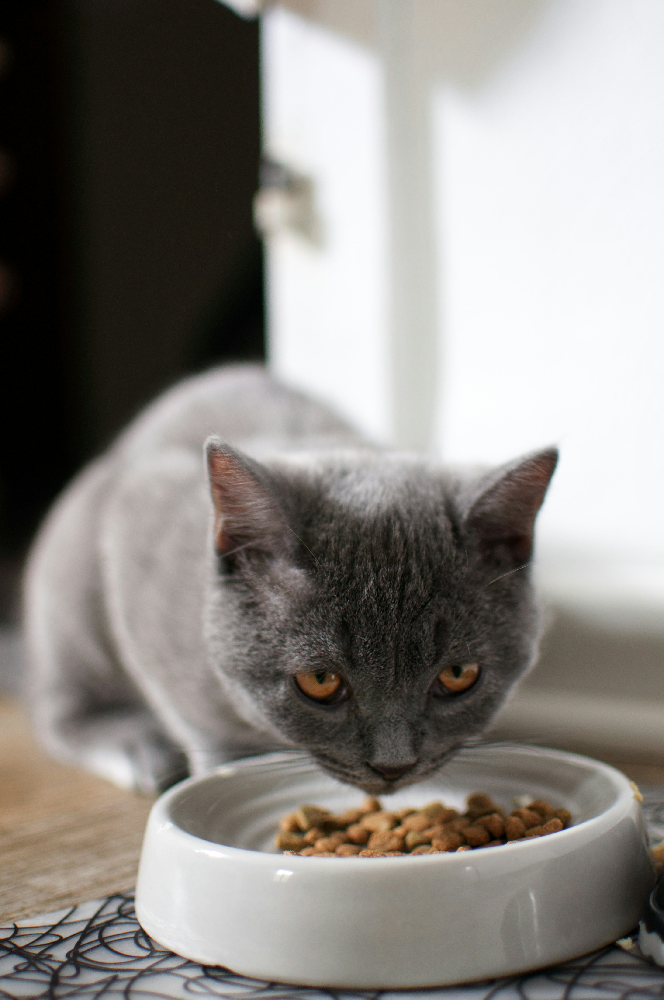
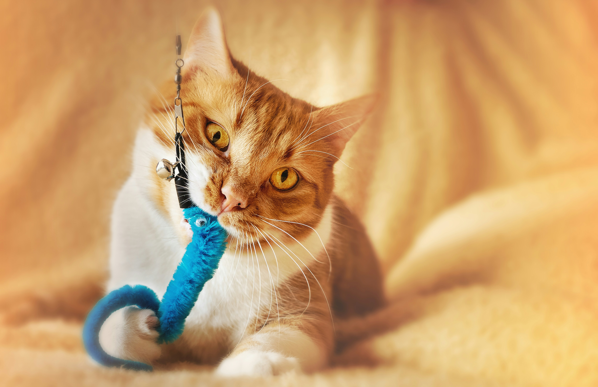

🧬 1. Tổng quan về loài mèo
Mèo (Felis catus) không chỉ là thú cưng mà còn là những người bạn có khả năng đặc biệt:
- Siêu thính giác: Nghe được tần số cao gấp 3 lần con người.
- Siêu nhảy: Nhảy cao gấp 5-6 lần chiều cao cơ thể.
- Fact: Một con mèo có thể dành 70% cuộc đời để ngủ và mỗi chiếc mũi là một "vân tay" duy nhất.
🐾 2. Các giống mèo phổ biến
 Mèo Ta: Khỏe mạnh, thông minh, cực kỳ dễ nuôi và phù hợp cho sinh viên.
Mèo Ta: Khỏe mạnh, thông minh, cực kỳ dễ nuôi và phù hợp cho sinh viên.
 Mèo Anh Lông Ngắn: Mặt tròn, má bánh bao, lười vận động nhưng rất hiền.
Mèo Anh Lông Ngắn: Mặt tròn, má bánh bao, lười vận động nhưng rất hiền.
 Mèo Ba Tư: Quý tộc, lông dài xù, cần chải chuốt kỹ lưỡng mỗi ngày.
Mèo Ba Tư: Quý tộc, lông dài xù, cần chải chuốt kỹ lưỡng mỗi ngày.
🥩 3. Chế độ dinh dưỡng (Phải xem)
Chọn đúng loại thực phẩm giúp mèo khỏe mạnh và kéo dài tuổi thọ.


| Nên ăn (Good ✅) | Tuyệt đối tránh (Bad ❌) |
|---|---|
| Thịt gà, cá hấp (lọc xương) | Socola & Caffeine (Ngộ độc) |
| Pate, ức gà luộc | Hành, tỏi (Phá hủy hồng cầu) |
| Thức ăn hạt (Royal Canin, Me-O) | Sữa bò (Gây tiêu chảy) |
🧼 4. Vệ sinh và Sức khỏe
Tắm: 1-2 lần/tháng bằng sữa tắm chuyên dụng. Đừng dùng sữa tắm người nhé!
Y tế: Nhớ tiêm phòng đầy đủ các bệnh cơ bản và tẩy giun định kỳ 3-6 tháng/lần.
Tip: Mua một cái trụ cào móng để tránh sofa nhà bạn bị mèo "khai tử".
🧸 5. Đồ chơi & Hành vi
Mèo cần vận động ít nhất 15 phút mỗi ngày để giảm stress.
- Cần câu mèo: Kích thích bản năng săn mồi.
- Cỏ mèo (Catnip): Thư giãn cực độ cho "Hoàng Thượng".
